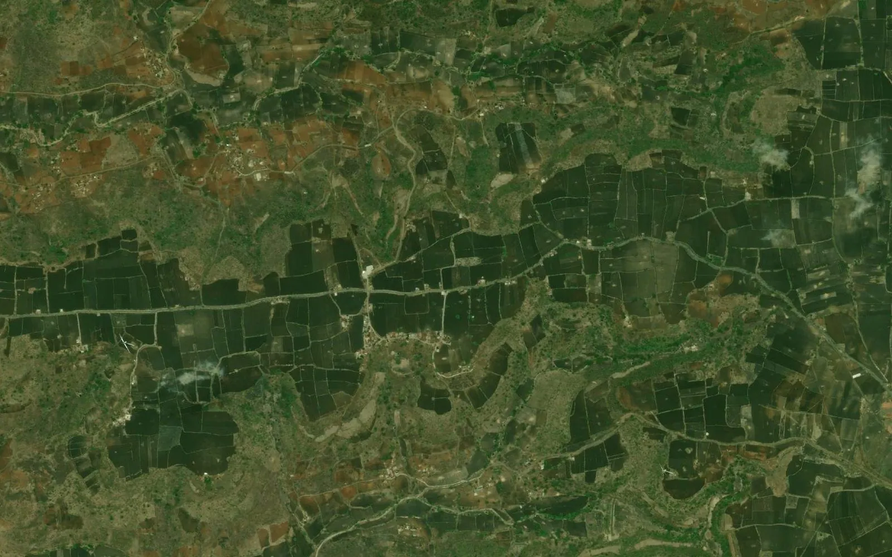

Bhunaksha Rajasthan: view the khasra map online and download it as KML, DWG or SHP

Bhunaksha Rajasthan (भू नक्शा राजस्थान) is the state revenue department's online village map viewer. It lets anyone open the revenue map of a village and click a khasra to see its number. It is free and it is the right first step. This guide explains how to use it, what it cannot do, and how to get the same village as a file you can open on satellite imagery.
1. How to open Bhunaksha Rajasthan
- Open the official portal bhunaksha.rajasthan.gov.in (older pages may still show bhunaksha.raj.nic.in).
- Choose the district, tehsil, revenue village and, where asked, the sheet number.
- The village map loads with every khasra outlined. Click a plot, or type the khasra number in the search box, and it is highlighted.
- Use the report or nakal option to get a PDF of the selected plot.
The jamabandi (ownership ledger) is on a different portal, Apna Khata (apnakhata.rajasthan.gov.in). Use both together: the map shows where the khasra is, the jamabandi shows who holds it and in what category.
2. What the viewer does not give you
- It shows one village sheet at a time. A solar, wind, road or transmission project often needs ten or fifty villages in one file.
- You cannot download a georeferenced khasra file (KML, DWG, SHP) from the viewer. The PDF is a picture, not a map you can overlay.
- The khasra lines do not sit exactly on a satellite image, because the record map was drawn long before satellite imagery.
- Land category (private, allotable government land, non-allotable) has to be read separately from the jamabandi.
3. From Bhunaksha to a satellite map
To see khasra numbers on satellite imagery, the village map is digitized and georeferenced: every khasra becomes a closed polygon carrying its number, fitted to WGS 84 / UTM coordinates using the village boundary and control points, and checked against field bunds, roads and canals on the imagery. The result opens in Google Earth, QGIS or AutoCAD. See how to find a khasra number on a satellite map and how to open a khasra KML in Google Earth.
4. Common Rajasthan search terms, one meaning
People search the same thing as Bhunaksha Rajasthan, bhu naksha Rajasthan, Rajasthan land map, khasra map Rajasthan, revenue map Rajasthan or village map with khasra numbers. In every case the base is the revenue village map, and the file formats above make it usable on a project. Read how to read a Rajasthan revenue map and the Rajasthan khasra map on satellite imagery guide.
5. Where to use the result
Land teams use the georeferenced file to list khasras inside a project boundary, to mark government land and abadi, to lay out solar blocks or turbine sites and to prepare a land schedule. A satellite overlay is a planning base. It is not proof of title, and any boundary that decides ownership or compensation should be confirmed by a ground survey.
Frequently asked questions
Is Bhunaksha Rajasthan free?
Yes. Viewing the village map and the plot report on the official portal is free.
Can I download a KML or shapefile from Bhunaksha Rajasthan?
The portal gives a PDF report. A georeferenced KML, DWG or SHP has to be made by digitizing and georeferencing the village map.
Which portal shows the jamabandi in Rajasthan?
Apna Khata (apnakhata.rajasthan.gov.in) shows the jamabandi. Bhunaksha shows the map.
राजस्थान भू नक्शा: सार
राजस्थान भू नक्शा पोर्टल पर जिला, तहसील और गांव चुनकर खसरा नंबर का नक्शा देखा जा सकता है। इसी गांव का सैटेलाइट इमेज पर जियो-रेफरेंस्ड खसरा नक्शा KML, DWG और SHP फाइल में चाहिए तो हमें गांव की सूची भेजें।
More: Rajasthan khasra maps, land record and revenue websites of every state, bhu naksha satellite map, check your village with the village checker, or ask for a quotation. BHU-NETRA Map Service is a private service and is not connected with any state government.
Need the village map as KML, DWG or SHP?
Georeferenced and digitized khasra maps in KML, DWG, SHP and Excel for 20 states, plus DGPS, Total Station, topographic and drone surveys. Single village orders welcome.